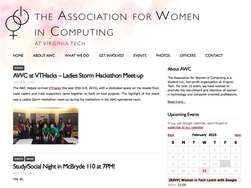
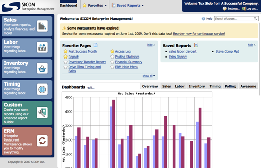
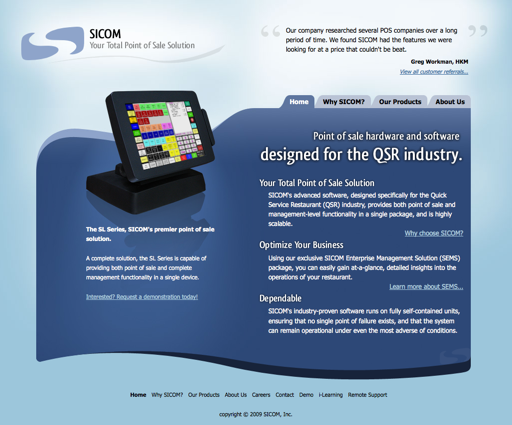
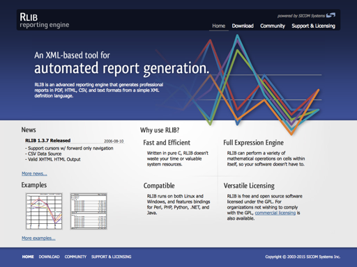
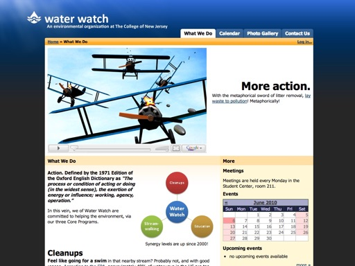
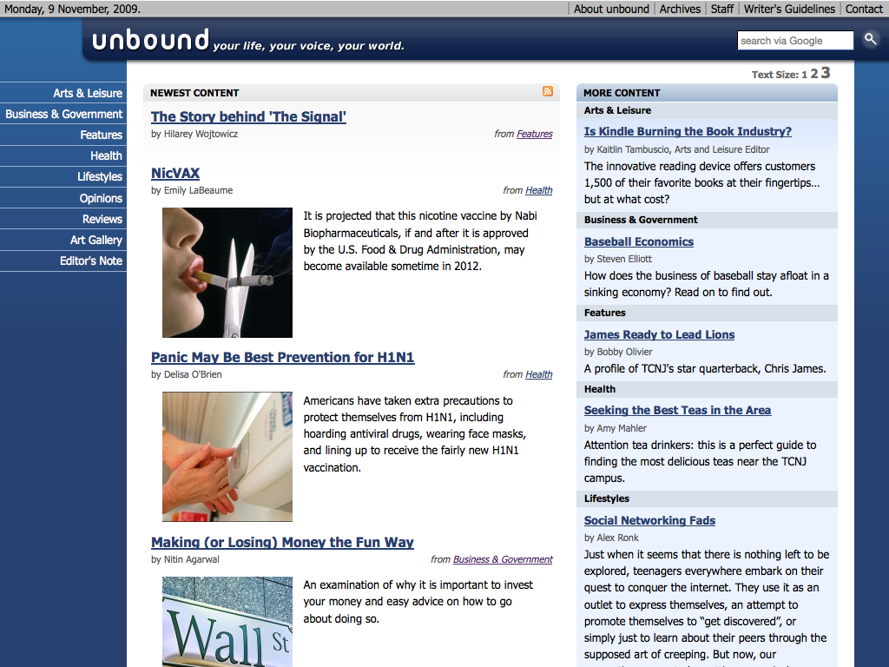
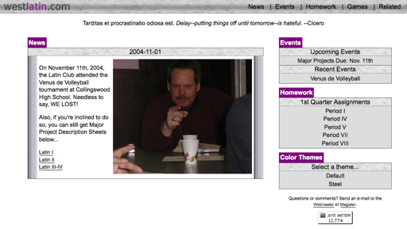

AWC at Virginia Tech Page

As the secretary for the Association for Women in Computing at Virginia Tech,
I redesigned the club's website, replacing the static site with one based
on Wordpress.
“SEMS 2.0” Visual Refresh

I worked with Sicom to redesign the Sicom Enterprise Management System,
a tool allowing companies to manage and analyze hundreds of restaurants at once.
After the refresh, an internal survey conducted by a major restaurant chain
found that SEMS went from being the lowest ranked enterprise tool to the highest.
Website for Sicom Systems, Inc.

I worked with Sicom to redesign their corporate website. In addition to the design
and layout, most product photos and content were my own work.
Website for the RLib Open-Source Project

Prior to redesigning their corporate website, I worked to redesign the page
for Sicom's sponsored open-source project, RLib, a program capable of
transforming data to formatted reports.
Water Watch Club Website

Revamped the website for Water Watch, a college environmental club focused on cleaning
up local waterways. Replaced static webpage with one powered by Drupal, which included
writing a custom theme and plugin to replace all club e-mail-based workflows.
This included a short film
I made for a class project.
Website for the Unbound College Magazine

For a summer research project, I built a content management system from scratch in PHP for use by
an online magazine at The College of New Jersey. Later, I redesigned Unbound's front page as well,
placing emphasis on article categorization and discovery.
High School Latin Club

Remember what the internet looked like in 2004?
This is my design for my high school's latin club (pretty good by 2004 standards,
wouldn't you say?) In true early-days-of-CSS fashion, I even threw in
a theme switcher. Woah.